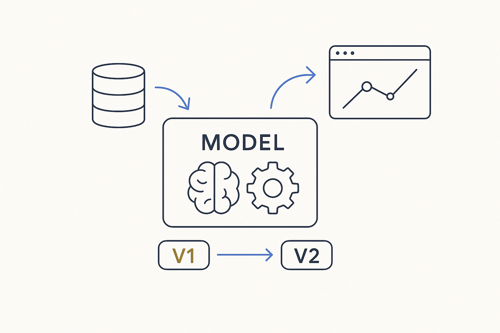

Version the model, not just the data — as models and transformations keep changing, capture how the system itself evolves, and model the reality that sources and interfaces run different versions at the same time.

> Version the model, not just the data — as models and transformations keep changing, capture how the system itself evolves, and model the reality that sources and interfaces run different versions at the same time.
In the new era it isn’t just a simple data model anymore. The data models and transformations keep changing — along with sources, platforms and teams — so we have to model the change in the system itself, the way MDDE does with model versioning. We already had data versioning — bi-temporal SCD2, tracking how the *data* changes over time. Model versioning is its counterpart: tracking how the *model and the platform* change over time. Two different clocks, both of which have to be captured, or the history is only half told.
The reality this exists for is concrete. Not every source can already deliver in the agreed, enterprise-wide integration format — some business entities are still one version behind, and that has to be modeled, not wished away. And outbound interfaces can sit on different versions at a given point in time too. So at any moment the landscape is a mix of versions coexisting: this source on v2, that one still on v1, this consumer expecting the new shape, that one not yet migrated. Model versioning is what makes that mixture explicit and manageable instead of a source of silent breakage.
Once versions are modeled, the transitions become governable: you can see who is behind, plan the migration, keep a contract valid across versions, and let systems tell each other which version they speak. Version the model, and the living system — not just a snapshot — is finally something you can reason about.
Where it lives: the delivery layer of Breakthrough Modeling — the system’s own change, versioned alongside the data’s.